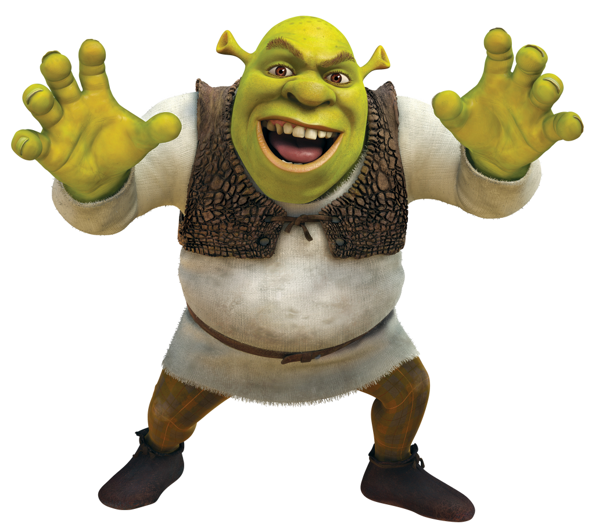

Shrek
Shrek es un ogro verde que disfruta de su vida solitaria en un pantano, hasta que se ve obligado a embarcarse en una misión para salvar su hogar.

Una película de animación que sigue la historia de un ogro llamado Shrek y su viaje inesperado para rescatar a la princesa Fiona.
Hace mucho tiempo, en una lejana ciénaga, vivía un ogro llamado Shrek. Un día, su preciada soledad se ve interrumpida por un montón de personajes de cuento de hadas que invaden su casa. Todos fueron desterrados de su reino por el malvado Lord Farquaad. Decidido a devolverles su reino y recuperar la soledad de su ciénaga, Shrek llega a un acuerdo con Lord Farquaad y va a rescatar a la princesa Fiona, la futura esposa del rey. Sin embargo, la princesa esconde un oscuro secreto.
Shrek es un ogro verde que disfruta de su vida solitaria en un pantano, hasta que se ve obligado a embarcarse en una misión para salvar su hogar.
Fiona es una princesa que guarda un gran secreto y que espera ser rescatada de su torre por un príncipe encantador.
Asno es el fiel y hablador compañero de Shrek, siempre listo para ofrecer su ayuda y sus bromas.
Lord Farquaad es un hombre cruel y codicioso que quiere convertirse oficialmente en el Rey de Duloc.
Es un gato que lucha como un mosquetero, aunque lo que más se caracteriza de él son sus botas, que es lo que le da nombre.
Dragona es la esposa y madre de los hijos de Asno/Burro, es una de las protagonista de la saga Shrek.
El Hombre de Jengibre, también llamado "Jengi", es una galleta de jengibre que fue horneada por Jero el Pastelero.
Pinocho sueña con ser un niño de verdad, y cada vez que dice mentiras le crece la nariz.
Los Tres Cerditos fueron desterrados a la ciénaga de Shrek por Lord Farquaad, quien sopló, sopló... y dio una orden de desahucio.
¿Te interesa saber quién contribuyó a esta obra de arte? Este es tu sitio, aquí encontrarás los actores de voz del doblaje castellano.
| Personaje | Actor de voz |
|---|---|
| Shrek | Juan Muñoz |
| Fiona | Nuria Mediavilla |
| Asno | José Mota |
| Lord Farquaad | Juan Carlos Gustems |
| Pinocho | Aleix Estadella |
| Gato con Botas | Antonio Banderas |
| Hombre de jengibre | Aleix Estadellaa |
Observa imágenes realcionadas con la película, así como su tráiler.
Quizá te interese saber algún que otro detale de la película.
| Detalles de la película | |
|---|---|
| Director | Andrew Adamson |
| Año | 2001 |
| Género | Comedia, Aventura |
Aquí se encuentran sus premios y reconocimientos que demuestra ser una peli de diez.
¿Te ha gustado la película? ¡Háznoslo saber!